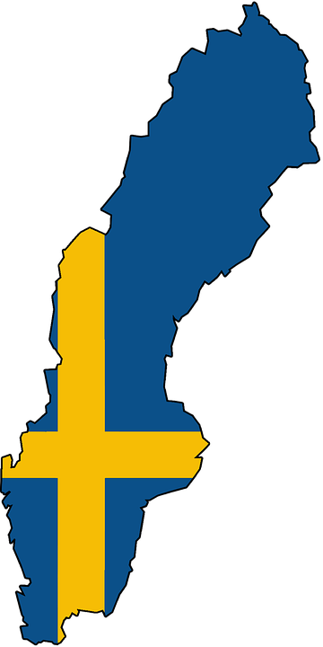
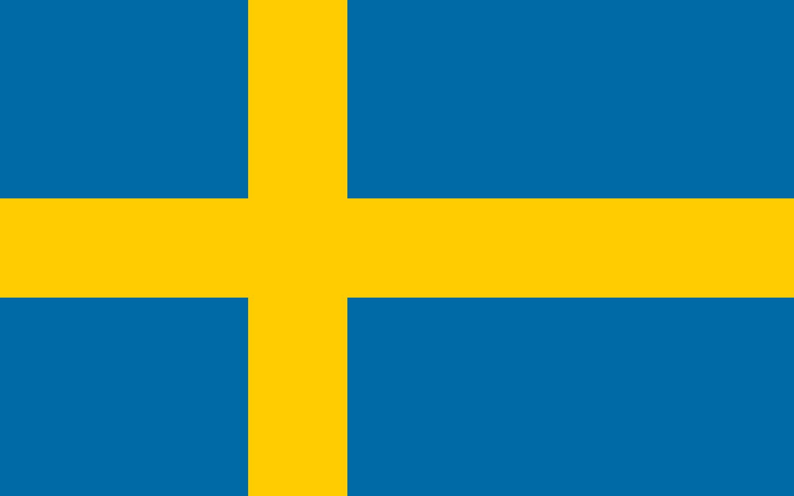

Ruotsi:
Tietoa:
Pääkaupunki: Tukholma
Valuutta: Ruotsin kruunu (SEK)
Valtiomuoto: perustuslaillinen monarkia
Kuningas: Kaarle XVI Kustaa (kuva alempana)
Pääministeri: Stefan Löfven

Pinta-ala: Yhteensä 450 295 km²
Viralliset kielet: pääkieli ruotsi, viisi virallista vähemmistökieltä ovat suomi, meänkieli, saame, romani ja jiddiš.
Lähteet: WikipediaRuotsin lippu:
Suurimmat kaupungit:
| Kaupunki | Asukasluku |
|---|---|
| 1. Tukholma | 864 324 |
| 2. Göteborg | 520 374 |
| 3. Malmö | 302 835 |
| 4. Uppsala | 200 001 |
Maantiede
Ruotsin pinta-ala on 450 295 neliökilometriä, ja se on siten neljänneksi laajin kokonaan Euroopassa sijaitseva maa. Ruotsi on varsin pitkä ja kapeahko maa: maan suurin pituus on 1 572 kilometriä ja suurin leveys 499 kilometriä. Maa sijaitsee lähes kokonaisuudessaan Skandinavian niemimaalla. Ruotsin rantoja huuhtoo idässä ja etelässä Itämeri ja lounaassa Pohjanmeri. Gotlannin ja Öölannin suuret saaret Itämeressä kuuluvat Ruotsiin. Tukholman edustalla sijaitsee laaja saaristo.
Kulttuuri
Vuonna 1928 pääministeri Per Albin Hansson kuvasi ruotsia sanalla kansankoti (ruots. folkhemmet). Se oli hyvinvointivaltion vertauskuva vuosisadan loppuun asti. Käsitteeseen liittyi joukko yhteiskunnallisia instituutioita: päiväkodit, vanhainkodit, sairaalat, kunnalliset musiikkiopistot, ammattiliitot ja vappuparaatit. Toinen kansallisten symbolien joukko liittyy Ruotsin maaseutumenneisyyteen: lavatanssit, juhannussalko, joulupidot. Teollistuminen ja kaupungistuminen tapahtuivat maassa myöhään.
Kuva Tukholmasta{kind=link}